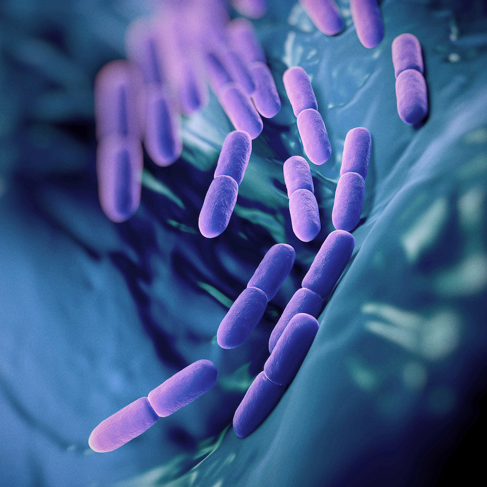
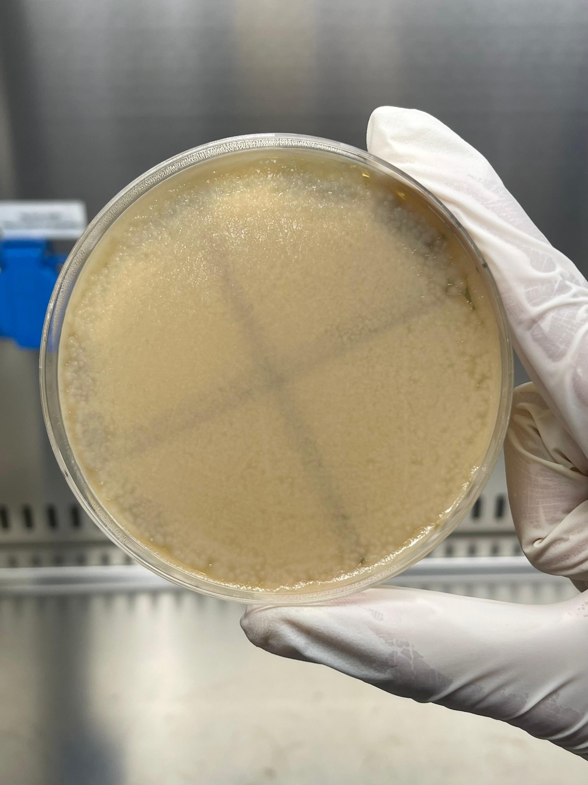
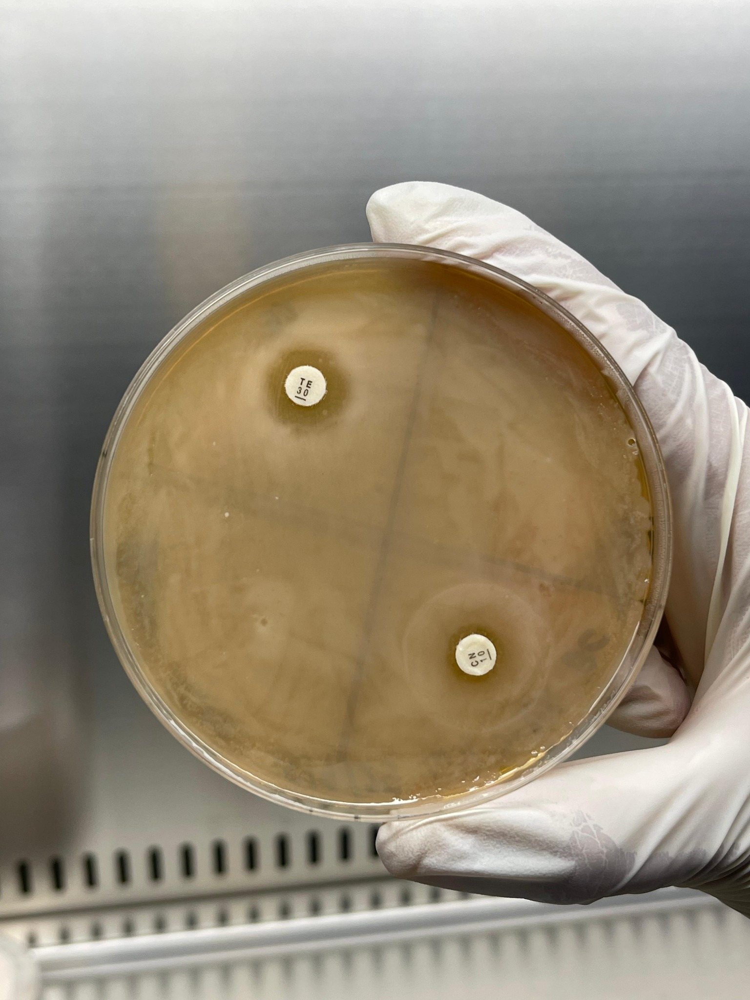
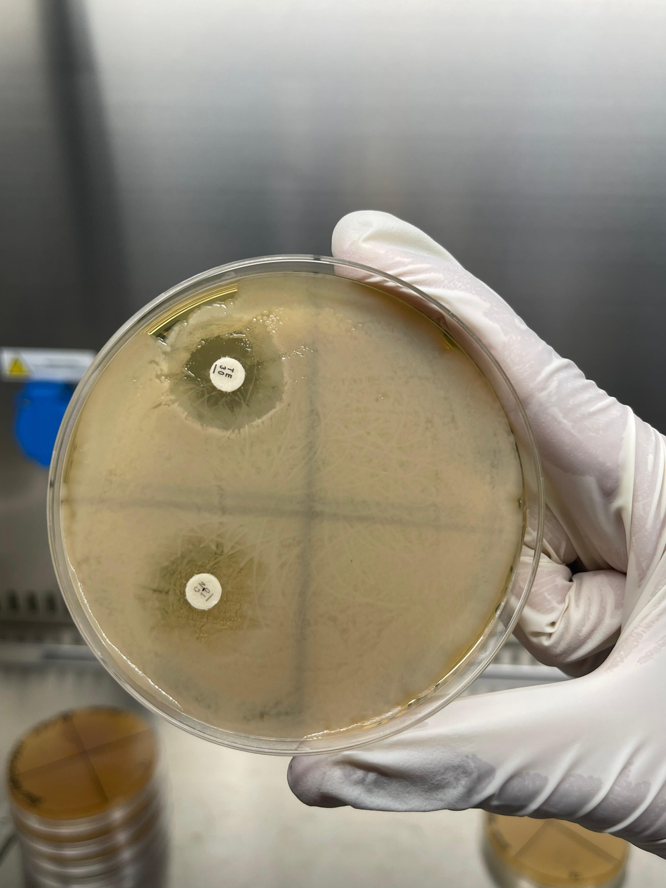
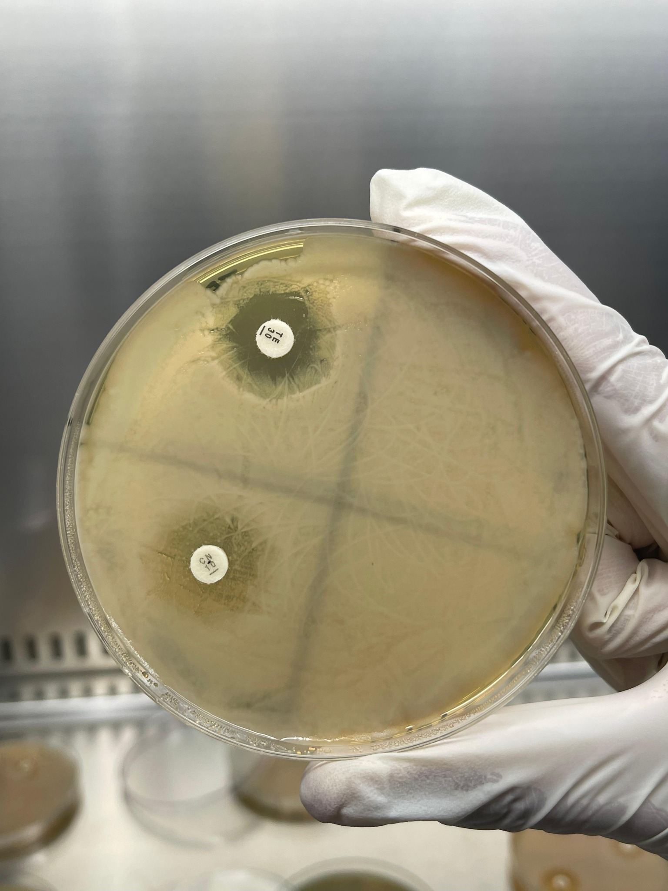
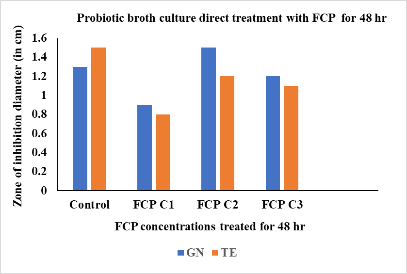
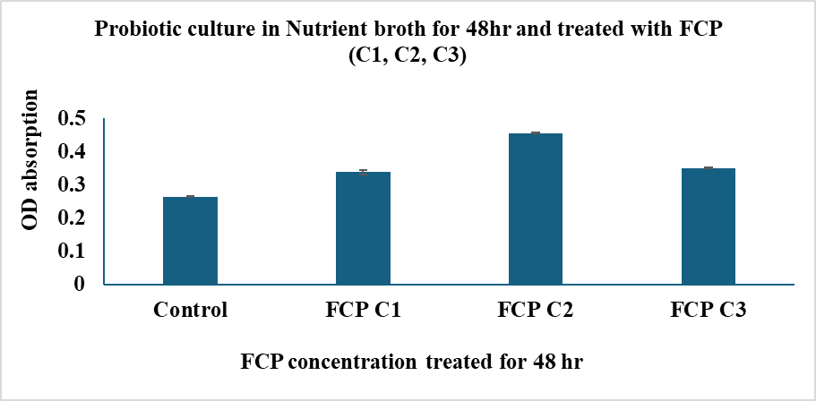

← Research experience
Wet-lab / microbiology research
Investigation of Fish Collagen Peptides as a Potential Prebiotic for Commercial Probiotics
An in-vitro undergraduate research project evaluating fish collagen peptides as a potential prebiotic component for commercially available probiotic.

Conceptual illustration of probiotic microorganisms
01 / Research objective
Research question
Can fish collagen peptides support the growth and influence the antibiotic-response characteristics of a commercially available probiotic?
02 / My contribution
What I did
- Established and maintained probiotic cultures through aseptic handling, inoculation, inoculum preparation and sub-culturing.
- Prepared fish collagen peptide-treated cultures and untreated controls for comparative assessment.
- Monitored bacterial growth through optical-density measurements at multiple observation points and adapted the assessment to the experimental setup.
- Performed colony counting as an additional culture-based assessment.
- Conducted direct-exposure and pre-exposure disc-diffusion assays and assessed antibiotic-response characteristics through zone-of-inhibition measurements.
03 / Research development
Skills gained
- Autoclaving and sterilization of laboratory materials.
- Culture-media preparation, agar pouring and plate preparation.
- Aseptic handling, inoculation and streak plating.
- Inoculum preparation, sub-culturing and culture maintenance.
- Colony counting and culture-based assessment.
- Optical-density-based growth assessment and spectrophotometric measurements.
- Disc-diffusion assays using direct- and pre-exposure approaches.
- Zone-of-inhibition measurement and analysis.
- Treatment and control setup, experimental optimization and comparative assessment.
- Data recording, interpretation and scientific documentation.
Laboratory documentation
Probiotic research gallery





